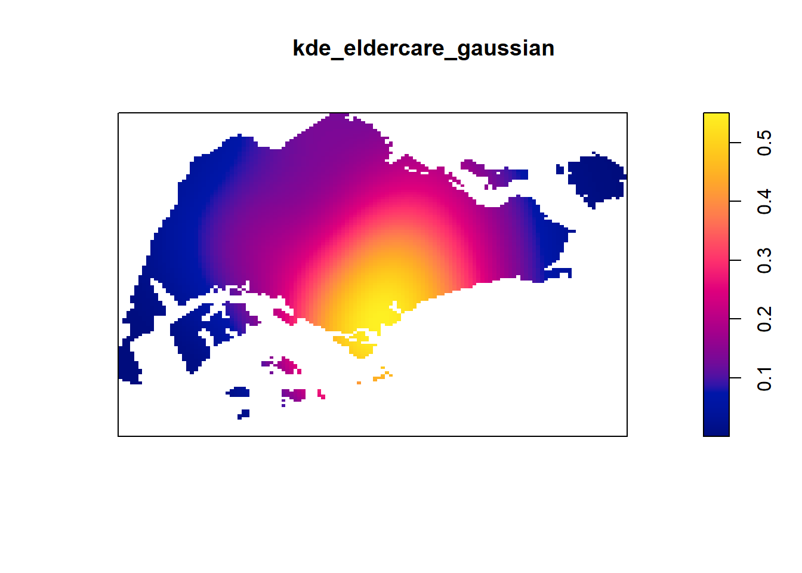
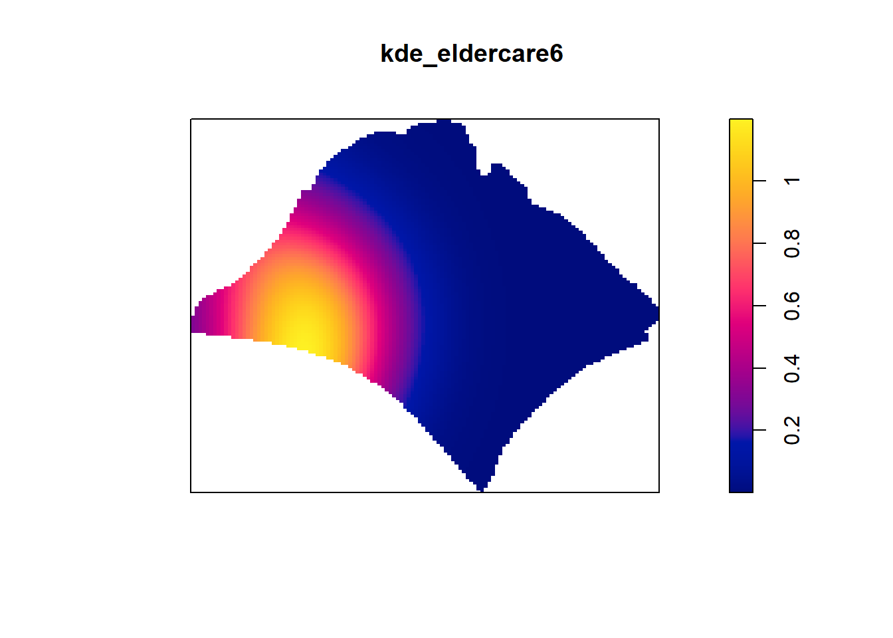
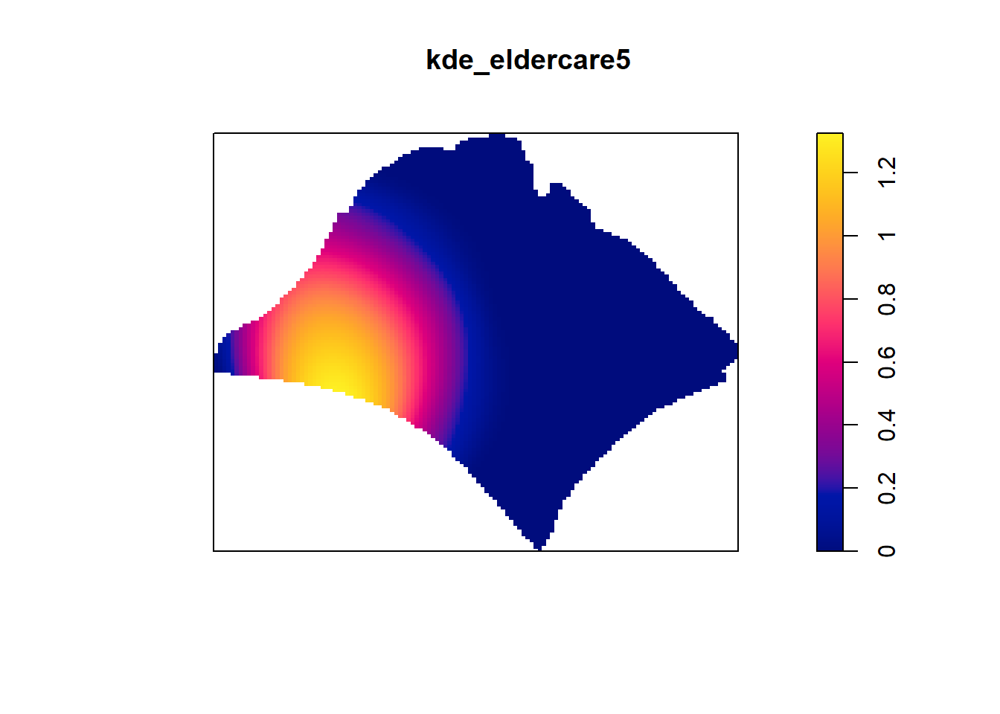

pacman::p_load(sf, spatstat, raster, maptools, tmap)Take Home Ex 3
Overview
In this exercise, my focus would be on 1st order Spatial Point Analysis - KDE. KDE plots are a powerful visualisation tool to help identify and analyse the spatial patterns of eldercare facility distribution across the region of interest. In our project, the region of interest consist of the 5 regions in Singapore as well as the different planning areas.
This analysis will help in data-driven insights, which could possible help stakeholders plan more effective service delivery and accessibility enhancements based on the current distribution of eldercare services.
R packages
I will load the following R packages for the following purposes:
sf: to import, manage and process vector-based geospatial data in R.
spatstat: to perform 1st- and 2nd-order spatial point patterns analysis and derive kernel density estimation (KDE) layer.
raster: used to convert image output generate by spatstat into raster format.
maptools: use it to convert Spatial objects into ppp format of spatstat.
tmap which provides functions for plotting cartographic quality static point patterns maps or interactive maps by using leaflet API.
Data Preparation
The data that I will be using includes:
URA 2014 Master Plan Planning Subzone boundary data. This data is in shapefile format which is downloaded from Data.gov.sg
Eldercare Services. This data provides both the location and information of eldercare services in Singapore. It was downloaded from Data.gov.sg and is in geojson format.
Coastal Ouline. It is provided by SLA and is in shapefile format.
eldercare <- st_read("data/EldercareServices.geojson") %>% st_transform(crs = 3414)Reading layer `EldercareServices' from data source
`C:\Nathania02\IS415-GAA\Take-home_Ex\Take-home_Ex03\data\EldercareServices.geojson'
using driver `GeoJSON'
Simple feature collection with 133 features and 2 fields
Geometry type: POINT
Dimension: XYZ
Bounding box: xmin: 103.7119 ymin: 1.271472 xmax: 103.9561 ymax: 1.439561
z_range: zmin: 0 zmax: 0
Geodetic CRS: WGS 84mpsz_sf <- st_read(dsn="data",layer="MP14_SUBZONE_WEB_PL")Reading layer `MP14_SUBZONE_WEB_PL' from data source
`C:\Nathania02\IS415-GAA\Take-home_Ex\Take-home_Ex03\data'
using driver `ESRI Shapefile'
Simple feature collection with 323 features and 15 fields
Geometry type: MULTIPOLYGON
Dimension: XY
Bounding box: xmin: 2667.538 ymin: 15748.72 xmax: 56396.44 ymax: 50256.33
Projected CRS: SVY21sg_sf <- st_read(dsn = "data", layer="CostalOutline")Reading layer `CostalOutline' from data source
`C:\Nathania02\IS415-GAA\Take-home_Ex\Take-home_Ex03\data'
using driver `ESRI Shapefile'
Simple feature collection with 60 features and 4 fields
Geometry type: POLYGON
Dimension: XY
Bounding box: xmin: 2663.926 ymin: 16357.98 xmax: 56047.79 ymax: 50244.03
Projected CRS: SVY21Since mpsz_sf does not have the proper crs information, the code chunk below updates the crs information.
mpsz_sf <- st_transform(mpsz_sf, crs=3414)
sg_sf <- st_transform(sg_sf, crs=3414)Geospatial Data Wrangling
Convert sf data frames to sp Spatial classes
mpsz <- as_Spatial(mpsz_sf)
ec <- as_Spatial(eldercare)
sg <- as_Spatial(sg_sf)Convert the Spatial class into generic sp format
ec_sp <- as(ec, "SpatialPoints")
sg_sp <- as(sg, "SpatialPolygons")Convert generic sp format inso spatstat ppp format
ec_ppp <- as.ppp(eldercare)Warning in as.ppp.sf(eldercare): only first attribute column is used for marksec_pppMarked planar point pattern: 133 points
marks are of storage type 'character'
window: rectangle = [14481.92, 41665.14] x [28218.43, 46804.9] unitssummary(ec_ppp)Marked planar point pattern: 133 points
Average intensity 2.632412e-07 points per square unit
Coordinates are given to 11 decimal places
marks are of type 'character'
Summary:
Length Class Mode
133 character character
Window: rectangle = [14481.92, 41665.14] x [28218.43, 46804.9] units
(27180 x 18590 units)
Window area = 505240000 square unitsCheck for duplicate values
Although the summary does not say that there are duplicate values, we will just do a check to make sure that we did not miss out anything.
any(duplicated(ec_ppp))[1] FALSECreating owin object
sg_owin <- as.owin(sg_sf)Combining point events objects and owin object
eldercareSG_ppp = ec_ppp[sg_owin]eldercare_ppp.km = rescale.ppp(eldercareSG_ppp, 1000, "km")1st Order Spatial Point Pattern Analysis
Level 1: General
Computing KDE - Automatic bandwidth
This section is creating the KDE plots based on the type of automatic bandwidth selected.
kde_eldercare_diggle <- density(eldercare_ppp.km, sigma=bw.diggle, edge=TRUE, kernel="gaussian")
kde_eldercare_ppl <- density(eldercare_ppp.km, sigma=bw.ppl, edge=TRUE, kernel="gaussian")
kde_eldercare_cvl <- density(eldercare_ppp.km, sigma=bw.CvL, edge=TRUE, kernel="gaussian")
kde_eldercare_scott <- density(eldercare_ppp.km, sigma=bw.scott, edge=TRUE, kernel="gaussian")
plot(kde_eldercare_diggle)
plot(kde_eldercare_ppl)plot(kde_eldercare_cvl)plot(kde_eldercare_scott)Shiny App (Storyboard)
Computing KDE - Type of kernel methods
This section is creating the KDE plots based on the kernel methods. Below is are 4 samples of variations based on the parameters that the user has selected. In the project, users can select any variations that they want.
kde_eldercare_quartic <- density(eldercare_ppp.km, sigma=bw.diggle, edge=TRUE, kernel="quartic")Warning in density.ppp(eldercare_ppp.km, sigma = bw.diggle, edge = TRUE, :
Bandwidth selection will be based on Gaussian kernelkde_eldercare_ep <- density(eldercare_ppp.km, sigma=bw.ppl, edge=TRUE, kernel="epanechnikov")Warning in density.ppp(eldercare_ppp.km, sigma = bw.ppl, edge = TRUE, kernel =
"epanechnikov"): Bandwidth selection will be based on Gaussian kernelkde_eldercare_gaussian <- density(eldercare_ppp.km, sigma=bw.CvL, edge=TRUE, kernel="gaussian")
kde_eldercare_disc <- density(eldercare_ppp.km,sigma=bw.scott, edge=TRUE, kernel="disc")Warning in density.ppp(eldercare_ppp.km, sigma = bw.scott, edge = TRUE, :
Bandwidth selection will be based on Gaussian kernelplot(kde_eldercare_quartic)plot(kde_eldercare_ep)plot(kde_eldercare_gaussian)
plot(kde_eldercare_disc)Shiny App (Storyboard)
Computing KDE - Fixed bandwidth
Below are some variations of KDE plots based on the bandwidth stated together with different kernel.
kde_eldercare_sigma6 <- density(eldercare_ppp.km, sigma=0.6, edge=TRUE, kernel="gaussian")
kde_eldercare_sigma9 <- density(eldercare_ppp.km, sigma=0.9, edge=TRUE, kernel="disc")
kde_eldercare_sigma5 <- density(eldercare_ppp.km, sigma=0.5, edge=TRUE, kernel="quartic")
kde_eldercare_sigma4 <- density(eldercare_ppp.km, sigma=0.4, edge=TRUE, kernel="epanechnikov")
plot(kde_eldercare_sigma6)plot(kde_eldercare_sigma9)plot(kde_eldercare_sigma5)plot(kde_eldercare_sigma4)Shiny App (Storyboard)
Computing KDE - Adaptive bandwidth
kde_eldercare_adaptive <- adaptive.density(eldercare_ppp.km, method="kernel")
plot(kde_eldercare_adaptive)Shiny App (Storyboard)
Level 2: Region
There are 5 regions in Singapore - Central, North, East, South, West and North-East. For the KDE plots, it will be based on a scenario where the user want to find out more about the eldercare services distribution in the Central region of Singapore.
library(dplyr)
Attaching package: 'dplyr'The following objects are masked from 'package:raster':
intersect, select, unionThe following object is masked from 'package:nlme':
collapseThe following objects are masked from 'package:stats':
filter, lagThe following objects are masked from 'package:base':
intersect, setdiff, setequal, unionExtracting study area
central <- mpsz_sf %>%
filter(REGION_N == "CENTRAL REGION")
north <- mpsz_sf %>%
filter(REGION_N == "NORTH REGION")
east <- mpsz_sf %>%
filter(REGION_N == "EAST REGION")
west <- mpsz_sf %>%
filter(REGION_N == "WEST REGION")
northe <- mpsz_sf %>%
filter(REGION_N == "NORTH-EAST REGION")Creating owin object
central_owin = as.owin(central)
north_owin = as.owin(north)
east_owin = as.owin(east)
west_owin = as.owin(west)
northe_owin = as.owin(northe)Combining eldercare points and study area
central_ppp = ec_ppp[central_owin]
north_ppp = ec_ppp[north_owin]
east_ppp = ec_ppp[east_owin]
west_ppp = ec_ppp[west_owin]
northe_ppp = ec_ppp[northe_owin]Rescaling to kilometres
central_ppp.km = rescale.ppp(central_ppp, 1000, "km")Computing KDE - Automatic Bandwidth
central_diggle <- density(central_ppp.km, sigma=bw.diggle, edge=TRUE, kernel="gaussian")
central_ppl <- density(central_ppp.km, sigma=bw.ppl, edge=TRUE, kernel="gaussian")
central_cvl <- density(central_ppp.km, sigma=bw.CvL, edge=TRUE, kernel="gaussian")
central_scott <- density(central_ppp.km, sigma=bw.scott, edge=TRUE, kernel="gaussian")
plot(central_diggle)plot(central_ppl)plot(central_cvl)plot(central_scott)Shiny App (Storyboard)
Computing KDE - Type of Kernel methods
central_gaussian <- density(central_ppp.km, sigma=bw.ppl, edge=TRUE, kernel="gaussian")
central_quartic <- density(central_ppp.km, sigma=bw.scott, edge=TRUE, kernel="quartic")Warning in density.ppp(central_ppp.km, sigma = bw.scott, edge = TRUE, kernel =
"quartic"): Bandwidth selection will be based on Gaussian kernelcentral_ep <- density(central_ppp.km, sigma=bw.diggle, edge=TRUE, kernel="epanechnikov")Warning in density.ppp(central_ppp.km, sigma = bw.diggle, edge = TRUE, kernel =
"epanechnikov"): Bandwidth selection will be based on Gaussian kernelcentral_disc <- density(central_ppp.km, sigma=bw.CvL, edge=TRUE, kernel="disc")Warning in density.ppp(central_ppp.km, sigma = bw.CvL, edge = TRUE, kernel =
"disc"): Bandwidth selection will be based on Gaussian kernelplot(central_gaussian)plot(central_quartic)plot(central_ep)plot(central_disc)
Shiny App (Storyboard)
Computing KDE - Fixed bandwidth
Below are some variations of KDE plots based on the bandwidth stated together with different kernel.
kde_central_eldercare2 <- density(central_ppp.km, sigma=0.2, edge=TRUE, kernel="gaussian")
kde_central_eldercare8 <- density(central_ppp.km, sigma=0.8, edge=TRUE, kernel="disc")
kde_central_eldercare7 <- density(central_ppp.km, sigma=0.7, edge=TRUE, kernel="quartic")
kde_central_eldercare3 <- density(central_ppp.km, sigma=0.3, edge=TRUE, kernel="epanechnikov")
plot(kde_central_eldercare2)plot(kde_central_eldercare8)plot(kde_central_eldercare7)plot(kde_central_eldercare3)Shiny App (Storyboard)
Computing KDE - Adaptive Bandwidth
kde_central_eldercare_adaptive <- adaptive.density(central_ppp.km, method="kernel")
plot(kde_central_eldercare_adaptive)Shiny App (Storyboard)
Level 3: Planning Area
The below scenario is whereby a user is interested in looking at the distribution of eldercare services in a particular Planning Area such as PUNGGOL.
Extracting study area
The code chunk below will be used to extract the different planning areas. There are only a 15 areas extracted but in the project, more of the planning areas will be extracted.
toapayoh <- mpsz_sf %>%
filter(PLN_AREA_N == "TOA PAYOH")
bukitmerah <- mpsz_sf %>%
filter(PLN_AREA_N == "BUKIT MERAH")
bishan <- mpsz_sf %>%
filter(PLN_AREA_N == "BISHAN")
amk <- mpsz_sf %>%
filter(PLN_AREA_N == "ANG MO KIO")
juronge <- mpsz_sf %>%
filter(PLN_AREA_N == "JURONG EAST")
woodlands <- mpsz_sf %>%
filter(PLN_AREA_N == "WOODLANDS")
changi <- mpsz_sf %>%
filter(PLN_AREA_N == "CHANGI")
pasirris <- mpsz_sf %>%
filter(PLN_AREA_N == "PASIR RIS")
bedok <- mpsz_sf %>%
filter(PLN_AREA_N == "BEDOK")
tm <- mpsz_sf %>%
filter(PLN_AREA_N == "TAMPINES")
punggol <- mpsz_sf %>%
filter(PLN_AREA_N == "PUNGGOL")
yishun <- mpsz_sf %>%
filter(PLN_AREA_N == "YISHUN")
sembawang <- mpsz_sf %>%
filter(PLN_AREA_N == "SEMBAWANG")
bukitbatok <- mpsz_sf %>%
filter(PLN_AREA_N == "BUKIT BATOK")
jurongw <- mpsz_sf %>%
filter(PLN_AREA_N == "JURONG WEST")Creating owin object
tp_owin = as.owin(toapayoh)
bs_owin = as.owin(bishan)
amk_owin = as.owin(amk)
je_owin = as.owin(juronge)
wdlds_owin = as.owin(woodlands)
changi_owin = as.owin(changi)
pr_owin = as.owin(pasirris)
bedok_owin = as.owin(bedok)
tm_owin = as.owin(tm)
pg_owin = as.owin(punggol)
ys_owin = as.owin(yishun)
sbw_owin = as.owin(sembawang)
bb_owin = as.owin(bukitbatok)
jw_owin = as.owin(jurongw)Combining eldercare points and study area
ec_tp_ppp = ec_ppp[tp_owin]
ec_bs_ppp = ec_ppp[bs_owin]
ec_amk_ppp = ec_ppp[amk_owin]
ec_je_ppp = ec_ppp[je_owin]
ec_wdlds_ppp = ec_ppp[wdlds_owin]
ec_changi_ppp = ec_ppp[changi_owin]
ec_pr_ppp = ec_ppp[pr_owin]
ec_bedok_ppp = ec_ppp[bedok_owin]
ec_tm_ppp = ec_ppp[tm_owin]
ec_pg_ppp = ec_ppp[pg_owin]
ec_ys_ppp = ec_ppp[ys_owin]
ec_sbw_ppp = ec_ppp[sbw_owin]
ec_bb_ppp = ec_ppp[bb_owin]
ec_jw_ppp = ec_ppp[jw_owin]Rescalling to kilometres
ec_tp_ppp.km = rescale.ppp(ec_tp_ppp, 1000, "km")
ec_bs_ppp.km = rescale.ppp(ec_bs_ppp, 1000, "km")
ec_amk_ppp.km = rescale.ppp(ec_amk_ppp, 1000, "km")
ec_je_ppp.km = rescale.ppp(ec_je_ppp, 1000, "km")
ec_wdlds_ppp.km = rescale.ppp(ec_wdlds_ppp, 1000, "km")
ec_changi_ppp.km = rescale.ppp(ec_changi_ppp, 1000, "km")
ec_pr_ppp.km = rescale.ppp(ec_pr_ppp, 1000, "km")
ec_bedok_ppp.km = rescale.ppp(ec_bedok_ppp, 1000, "km")
ec_tm_ppp.km = rescale.ppp(ec_tm_ppp, 1000, "km")
ec_pg_ppp.km = rescale.ppp(ec_pg_ppp, 1000, "km")
ec_ys_ppp.km = rescale.ppp(ec_ys_ppp, 1000, "km")
ec_sbw_ppp.km = rescale.ppp(ec_sbw_ppp, 1000, "km")
ec_bb_ppp.km = rescale.ppp(ec_bb_ppp, 1000, "km")
ec_jw_ppp.km = rescale.ppp(ec_jw_ppp, 1000, "km")I want to make sure that all the planning areas have points data so that it can be used in the kernel density estimation in the next steps. While doing so, I realised that areas such as Changi and Pasir ris do not have any point data. Therefore, these areas will not be an option in the storyboard in the project.
summary(ec_changi_ppp.km)Marked planar point pattern: 0 points
Average intensity 0 points per square km
Coordinates are integers
i.e. rounded to the nearest km
marks are of type 'character'
Summary:
Length Class Mode
0 character character
Window: polygonal boundary
single connected closed polygon with 800 vertices
enclosing rectangle: [42.57532, 50.29396] x [32.52441, 41.74324] km
(7.719 x 9.219 km)
Window area = 40.9405 square km
Unit of length: 1 km
Fraction of frame area: 0.575summary(ec_pr_ppp.km)Marked planar point pattern: 0 points
Average intensity 0 points per square km
Coordinates are integers
i.e. rounded to the nearest km
marks are of type 'character'
Summary:
Length Class Mode
0 character character
Window: polygonal boundary
single connected closed polygon with 672 vertices
enclosing rectangle: [37.01507, 44.32258] x [37.20046, 42.56119] km
(7.308 x 5.361 km)
Window area = 15.8096 square km
Unit of length: 1 km
Fraction of frame area: 0.404Computing KDE - Automatic bandwidth
This section is creating the KDE plots based on the type of automatic bandwidth selected.
pg_diggle <- density(ec_pg_ppp.km, sigma=bw.diggle, edge=TRUE, kernel="gaussian")Warning: Berman-Diggle Cross-Validation criterion was minimised at right-hand
end of interval [0, 0.245]; use argument 'hmax' to specify a wider interval for
bandwidth 'sigma'pg_ppl <- density(ec_pg_ppp.km, sigma=bw.ppl, edge=TRUE, kernel="gaussian")Warning: Likelihood Cross-Validation criterion was maximised at left-hand end
of interval [0.553, 2.47]; use argument 'srange' to specify a wider interval
for bandwidth 'sigma'pg_cvl <- density(ec_pg_ppp.km, sigma=bw.CvL, edge=TRUE, kernel="gaussian")
pg_scott <- density(ec_pg_ppp.km, sigma=bw.scott, edge=TRUE, kernel="gaussian")
plot(pg_diggle)plot(pg_ppl)plot(pg_cvl)
plot(pg_scott)Shiny App (Storyboard)
Computing KDE - Type of kernel methods
This section is creating the KDE plots based on the kernel methods. Below is are 4 samples of variations based on the parameters that the user has selected.
pg_quartic <- density(ec_pg_ppp.km, sigma=bw.diggle, edge=TRUE, kernel="quartic")Warning in density.ppp(ec_pg_ppp.km, sigma = bw.diggle, edge = TRUE, kernel =
"quartic"): Bandwidth selection will be based on Gaussian kernelWarning: Berman-Diggle Cross-Validation criterion was minimised at right-hand
end of interval [0, 0.245]; use argument 'hmax' to specify a wider interval for
bandwidth 'sigma'pg_ep <- density(ec_pg_ppp.km, sigma=bw.ppl, edge=TRUE, kernel="epanechnikov")Warning in density.ppp(ec_pg_ppp.km, sigma = bw.ppl, edge = TRUE, kernel =
"epanechnikov"): Bandwidth selection will be based on Gaussian kernelWarning: Likelihood Cross-Validation criterion was maximised at left-hand end
of interval [0.553, 2.47]; use argument 'srange' to specify a wider interval
for bandwidth 'sigma'pg_gaussian <- density(ec_pg_ppp.km, sigma=bw.CvL, edge=TRUE, kernel="gaussian")
pg_disc <- density(ec_pg_ppp.km,sigma=bw.scott, edge=TRUE, kernel="disc")Warning in density.ppp(ec_pg_ppp.km, sigma = bw.scott, edge = TRUE, kernel =
"disc"): Bandwidth selection will be based on Gaussian kernelplot(pg_quartic)plot(pg_ep)plot(pg_gaussian)plot(pg_disc)Shiny App (Storyboard)

Computing KDE - Fixed bandwidth
Below are some variations of KDE plots based on the bandwidth stated together with different kernel.
kde_eldercare6 <- density(ec_pg_ppp.km, sigma=0.6, edge=TRUE, kernel="gaussian")
kde_eldercare9 <- density(ec_pg_ppp.km, sigma=0.9, edge=TRUE, kernel="disc")
kde_eldercare5 <- density(ec_pg_ppp.km, sigma=0.5, edge=TRUE, kernel="quartic")
kde_eldercare4 <- density(ec_pg_ppp.km, sigma=0.4, edge=TRUE, kernel="epanechnikov")
plot(kde_eldercare6)
plot(kde_eldercare9)plot(kde_eldercare5)
plot(kde_eldercare4)Shiny App (Storyboard)
Computing KDE - Adaptive bandwidth
kde_eldercare_adaptive <- adaptive.density(ec_pg_ppp.km, method="kernel")Warning: Likelihood Cross-Validation criterion was maximised at left-hand end
of interval [0.553, 2.47]; use argument 'srange' to specify a wider interval
for bandwidth 'sigma'plot(kde_eldercare_adaptive)Shiny App (Storyboard)
Shiny App (Storyboard) Calibration Parameters
# Load required packages
library(knitr)
library(kableExtra)
Attaching package: 'kableExtra'The following object is masked from 'package:dplyr':
group_rows# Create a data frame
data <- data.frame(
Parameter = c("Spatial Unit", "Places of Interest", "Area of Interest", "Automatic Bandwidth Methods","Bandwidth","Sigma", "Method"),
Filter_Options = c("Overall, Region, Planning Area", "Eldercare services", "Depends on the Spatial Unit selected - Either the list of regions or the list of planning areas available e.g. Bedok, Punggol etc.","bw.diggle, bw.ppl, bw.CvL, bw.scott", "Fixed, Adaptive","Users can select a value from 0-1.0","Kernel")
)
# Generate the table
kable(data, align = 'l', col.names = c("Parameter", "Filter Options")) %>%
kable_styling(full_width = FALSE)| Parameter | Filter Options |
|---|---|
| Spatial Unit | Overall, Region, Planning Area |
| Places of Interest | Eldercare services |
| Area of Interest | Depends on the Spatial Unit selected - Either the list of regions or the list of planning areas available e.g. Bedok, Punggol etc. |
| Automatic Bandwidth Methods | bw.diggle, bw.ppl, bw.CvL, bw.scott |
| Bandwidth | Fixed, Adaptive |
| Sigma | Users can select a value from 0-1.0 |
| Method | Kernel |